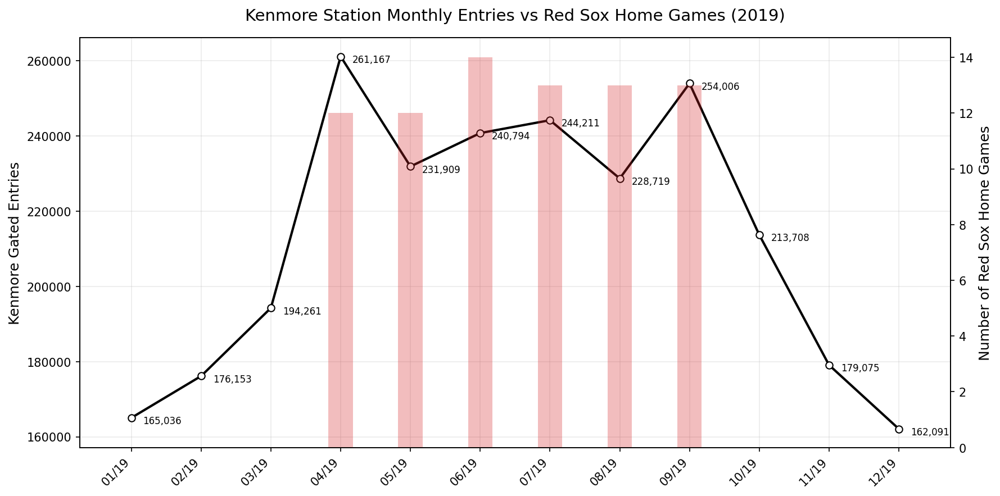
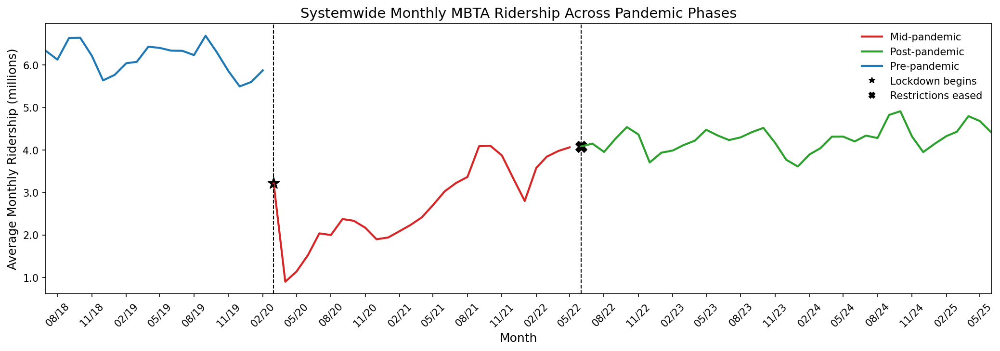

Visualizations
The Red Sox's Impact on Riderships
This visualization looks at how the number of Red Sox home games relates to ridership at Kenmore Station. Kenmore is the closest stop to Fenway Park, so it's one of the stations most affected by baseball season. The line represents monthly gated entries, and the bars show how many Red Sox home games happened in the same month. The months with many home games show large increases in station entries, especially April through September. This pattern suggests that major events at Fenway Park have a direct impact on MBTA usage at nearby stations.
Weather Impact on Ridership
This interactive visualization lets users explore how MBTA ridership changes under different weather conditions. Users can switch between temperature or precipitation on the x-axis and view all transit modes together or isolate individual lines. The scatter shows that ridership tends to be lower during extremely cold or snowy months across nearly all modes, while warmer or rainy conditions don't show the same consistent drop. This helps compare patterns across different modes and quickly spot outliers or clusters that align with specific seasonal conditions.
The Busiest MBTA Stations
This visualization shows the busiest MBTA stations in 2019, 2020 and 2021 based on average daily gated entries. Downtown stations like South Station, Downtown Crossing, and Park Street stand out as major hubs because they serve multiple lines and connect to commuter rail and bus routes. Neighborhood stops like Forest Hills and Maverick still appear high on the list, showing strong demand from communities outside downtown. A large change between the years is that South Station was the busiest station in 2019, but then was not in the top 5 in 2020 or top 10 in 2021 respectivly. One explanation is that after 2019, the silver line stopped being connected to South Station so those gated entries no longer counted for it. There is a dropdown to change the year, and clicking on lines in the legend helps show how each line contributes differently to system activity.
Ridership Across Pandemic Phases
This chart shows how MBTA ridership changed before, during, and after the pandemic. The biggest drop happens right after the March 2020 lockdown, when ridership falls sharply from more than six million monthly riders to under one million. Ridership stays low through 2020 but starts climbing again in 2021 and reaches a more stable pattern after mid-2022 once restrictions are lifted. The alternating colors help separate the three phases, making it easier to see how each stage of the pandemic affected systemwide travel behavior.
Popularity of Each MBTA Line
This visualization shows the total ridership across each MBTA subway line in 2019, aggregating all station entries for each line. The Red Line leads in total ridership, followed closely by the Orange Line, reflecting their extensive networks and connections to major employment centers and residential neighborhoods. The Green and Blue Lines serve more focused corridors but still handle substantial daily ridership. The Silver Line shows notably lower totals, which makes sense given its shorter route and more limited station coverage compared to the older, more established subway lines. This breakdown helps illustrate how ridership demand is distributed across Boston's transit system and which lines carry the heaviest loads.